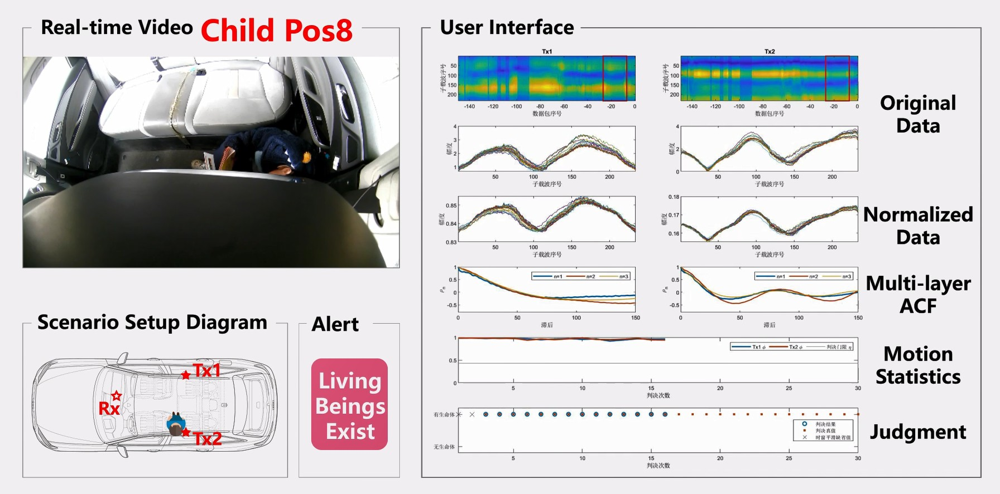
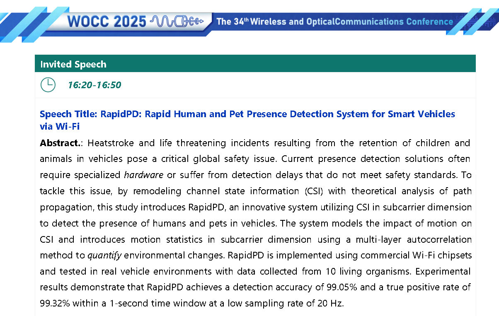
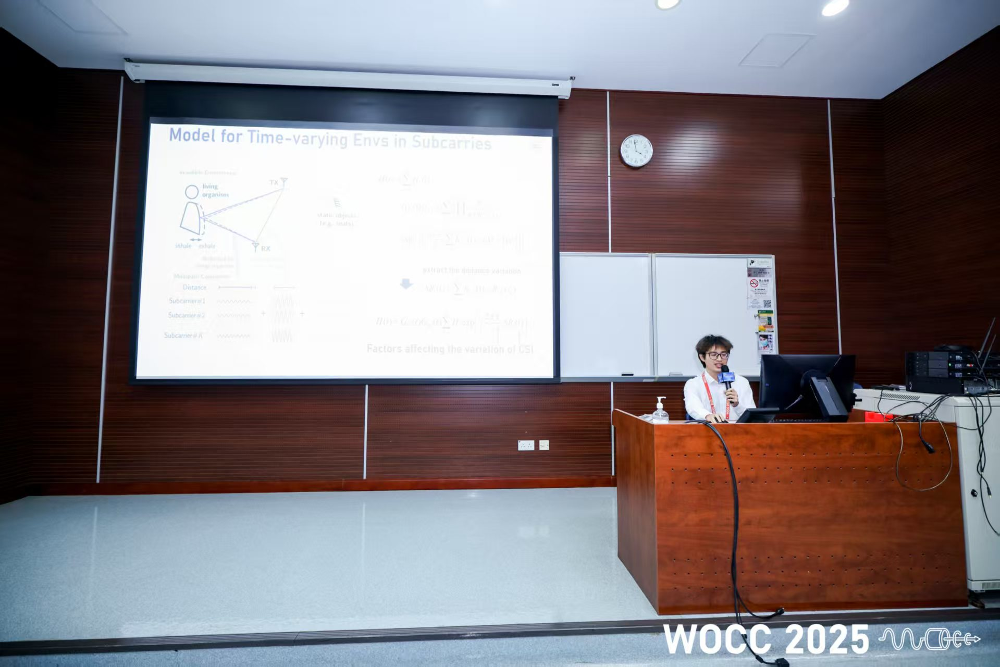

Low-Cost Wireless Sensing: From Modeling to Real-World Validation
RapidPD is a low-cost sensing system that reuses existing in-vehicle Wi-Fi devices to detect a child or pet left behind. My responsibility was software algorithm design and system debugging: I translated the safety and latency requirements into a sensing model, integrated the algorithm with the commercial-hardware data pipeline, and used long-term field tests to locate and correct failures.
From Constraints to a Working Algorithm
The hard part was meeting low cost, full-cabin coverage, and fast response at the same time. Existing methods waited for weak motion to accumulate over long sequences. Instead of adding model complexity, I returned to the propagation mechanism and recognized that small motion leaves structure across many subcarriers at the same instant. That reframed the task from 'wait longer' to 'use the horizontal structure' and reduced the detection window to one second. The transferable lesson is to identify the root bottleneck before choosing the representation and algorithm.
The hardware platform was provided by the team; my work began once its data entered the software pipeline. I decomposed the physical hypothesis into processing stages that could be inspected independently, then debugged against hardware drift, complex multipath, and weak motion in real measurements. Normalization, feature enhancement, and decision smoothing emerged from those observed failure modes. The final algorithm operates on 20 Hz sampling and one second of data, reaching 99.05% overall accuracy and 99.32% true positive rate in vehicle tests.
Finding Failure Boundaries in the Real World
I treated evaluation as a stress test of the system's assumptions, not a search for one high score. More than four months of collection covered ten people and pets of different sizes, eleven cabin positions, and parking structures, roadsides, open areas, and an elevated bridge. I also compared against a conventional baseline and ablated key modules to separate genuine improvement from experimental coincidence. This mirrors real robotics deployment: the important question is when a system fails under viewpoint, signal-strength, and environment shifts.

Research Outcome and Technical Communication
The work was published with me as first author in IEEE Transactions on Aerospace and Electronic Systems. I was then invited to give a 30-minute talk at WOCC 2025, compressing a long project into a clear argument: why the problem matters, why prior approaches are constrained, what the key insight is, and whether the system actually holds up in complex environments. Completing the research is one skill; making it quickly understandable and open to critique by researchers from other backgrounds is another.


This work developed the basic abilities: defining a testable problem from an ambiguous need, translating physical intuition into an algorithm, integrating that algorithm with real hardware, and using cross-scenario experiments to locate failure boundaries.